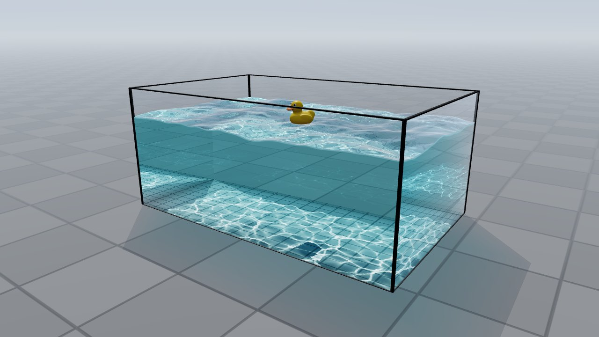
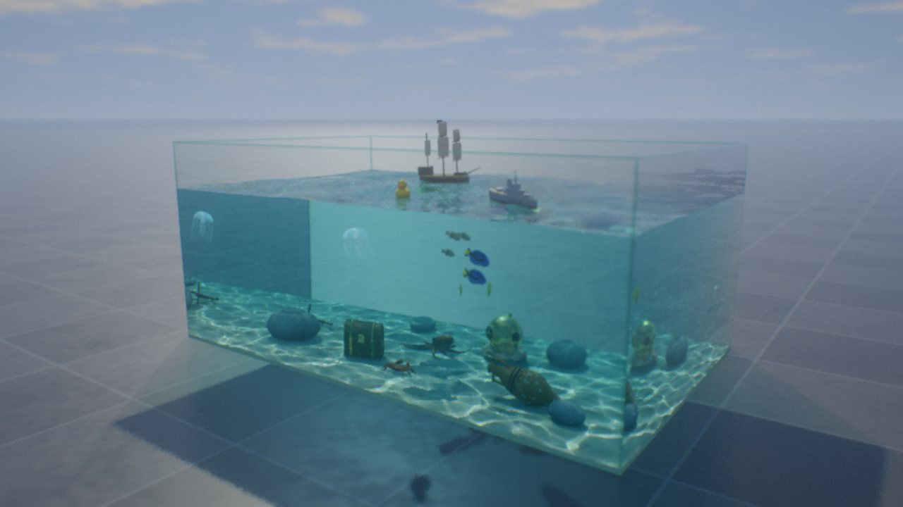

CAUSTIC//VOLUME
Real-time water caustics in the browser: sunlight bent by a moving surface and focused into the bright lines you see on the bottom of a pool. Each version is one HTML file built on three.js, free and open source.

CAUSTIC//LITE
A random sea, a rubber duck making ripples, sun or lamp, and the caustics, in about 990 readable lines. Runs on old laptops and phones.
three.js on WebGL 2, or the CPU when there is none

CAUSTIC//VOLUME sandbox
Boats, creatures, ink, falling sand, lamps and a laser. Built to push a strong GPU.
three.js on WebGL 2 and a capable GPU